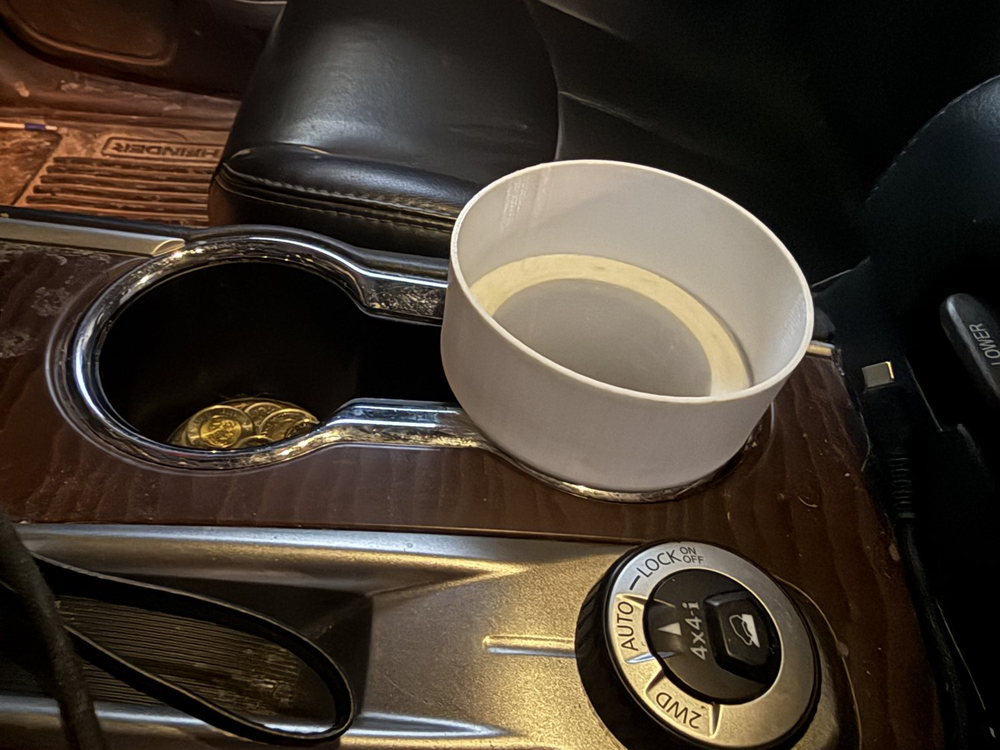

Custom Cup Holder Adapters for Larger Water Bottles
Custom-sized 3D-printed adapters that fit into a vehicle’s existing cup holder and give it a larger holder for bottles such as a Hydro Flask or a YETI. I sold them through my 3D printing business, and they were well received.
- Type
- 3D-printed product
- Sized
- Custom, to the bottle and cup holder
- Sold through
- My 3D printing business
- Response
- Well received

One part, two fits
- BaseFits into the vehicle’s existing cup holder.
- TopA larger opening that holds the bottle.
- StepThe shoulder between the two sections sits on the console.
- SizingMade to size, because bottles and cup holders vary.
Big bottles, small cup holders
Larger water bottles don’t fit many standard vehicle cup holders. A bottle like a Hydro Flask or a YETI is wider than the holder it’s supposed to sit in, so it ends up on the seat or the floor.
An adapter that fits both
The adapter has two sections. The base fits into the existing cup holder. Above it, a wider cup gives the bottle a holder of the right size. The step where the two sections meet rests on the console around the cup holder.

What I did
I custom-sized the adapters for the bottle and the cup holder they had to fit, printed them, and sold them through my business.
How customers responded
The adapters were well received, and along with my light switch gears they were among the products customers responded to best.
Designing for someone else’s problem
This product only works if it fits. A part that is almost the right size is no use to the customer, so the size had to be right for their bottle and their vehicle. It taught me that designing for a real user means starting from their situation, not from what is easiest to print.
It also showed me what makes a simple product worth paying for: it solves an everyday problem that the customer already has.